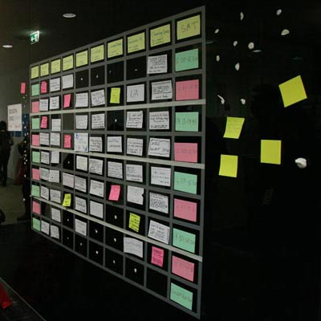
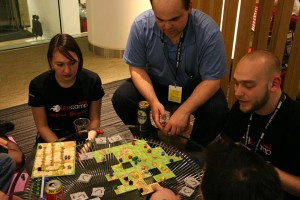

New To BarCamp?
If you have never been to a BarCamp before, we would love you to come along to BarCamp London 8! It’s great fun and we are always looking for new folks to attend – BarCamp is all about the people.

What Happens At BarCamp?
At BarCamp, a group of enthusiastic people gather to share their knowledge about technology and anything else they are interested in. They do this by attending presentations given by other attendees – and giving presentations themselves, of course. A BarCamp presentation can be as formal or informal as you like. You can go to any session you like, and if you don’t find a session interesting, you can leave and go to another. Everyone is encouraged to give a session or participate in whatever way they can. When sessions aren’t running, there’s usually other fun stuff happening: food and drink, games, conversation, silliness, and people hacking on projects. Don’t be afraid, there’s lots of good stuff going on at BarCamp.
About BarCamp
BarCamp is a “participatory unconference”, so you, the attendees are going to be making the event as great as it can be. The idea is that everyone who comes takes part in some way: that might be running a session (which is not as scary as you might think), taking photos, blogging, tweeting etc. For those of you who want to run a session, this is what you need to know:
The Grid
Sessions are not booked or organised like an ordinary conference, instead we will open up a “Grid” with empty slots. One column for each room, one row for each time slot, one grid for each day. When the grid opens, at around 11:45 AM, you will be able to claim your slot on the grid by sticking up an index card with your session title and your name on with some blue tak. Index cards, pens, and Blu-Tack are all provided for you in the morning so you will be ready when the grid opens.
Session Topics
You can run a session on anything you want, really, anything. Your session needn’t be technical or formal, and can be in any style you are comfortable with. We’ve had sessions on all sorts of topics in the past such as mixing mojitos, photography, lifehacking, and making cookies (and plenty of other stuff), right through to advanced discussions on programming, hardware hacking, and web design. Take your pick!
A good tip is to head to sessions that you know less about, that way you will learn more. If you don’t see a session on something you are interested in, you might want to run a discussion or sharing session where you can all just talk about something – whether that’s kittens, Python or juggling.
Evening Entertainment
Sessions will run until around 9:00 PM, after which we will be having a party and there will be lots of treats for everyone! There will also be traditional BarCamp games such as Werewolf, Powerpoint Karaoke (we can teach you at BarCamp, don’t worry), and hopefully some fantastic conversations.
These will all go on late into the night, and everyone is welcome to stay in the venue until the next morning. Just remember to bring a sleeping bag if you are doing this.
Food And Drink
Remember that all food and drink is provided, so no need to bring your own packed lunch!


{kind=link}
{kind=link}
[...] You can find more information about BarCamp London here. [...]
Pingback by Barcamp London 7 « Perils of a Wandering Mind — October 12, 2009 at 7:57 pm
i love food and drinks that are very tasty. i do eat a lot and drink a lot of alcohol these days “-,
Comment by Money Market Account %0B — December 13, 2010 at 5:20 am
i love food and drinks that are very tasty. i do eat a lot and drink a lot of alcohol these days “;’
Comment by Mobile Hard Drive %0B — December 13, 2010 at 6:09 am
”* I am really thankful to this topic because it really gives great information -.,
Comment by Pest Repeller %0B — January 24, 2011 at 4:55 pm
Great ¡V I should definitely pronounce, impressed with your site. I had no trouble navigating through all tabs and related info ended up being truly simple to do to access. I recently found what I hoped for before you know it at all. Quite unusual. Is likely to appreciate it for those who add forums or anything, web site theme . a tones way for your client to communicate. Nice task..
Comment by Fletcher Buerstatte — April 15, 2011 at 11:51 pm
by Caz on May 9, 2010 at 11:15 pm If you have never been to a BarCamp before, we would love you to come along to BarCamp London 8! It
Comment by chapman62 — June 1, 2011 at 2:05 am
by Caz on May 9, 2010 at 11:15 pm If you have never been to a BarCamp before, we would love you to come along to BarCamp London 8! It
Comment by davenport34 — June 1, 2011 at 2:07 am
Superior Web-site! I desired to ask if I might pages and use a part of the net website and make use of some elements for any university assignment. Make sure you inform me via e mail whether that might be great. Many thanks
Comment by Balenciaga bag — July 13, 2011 at 11:20 am
I have been browsing online more than 3 hours today, yet I never found any interesting article like yours. It is pretty worth enough for me. Personally, if all web owners and bloggers made good content as you did, the net will be much more useful than ever before.
Comment by Charlsie Seith — July 14, 2011 at 8:48 am
Hey there! Would you mind if I share your blog with my twitter group? There’s a lot of folks that I think would really appreciate your content. Please let me know. Thanks
Comment by how to increase my website traffic — July 17, 2011 at 7:17 am
Certainly with preceding poster, seems to be such as you will do properly out here throughout the world-wide-web.
Comment by Girls For Marriage — August 11, 2011 at 7:56 am
sounds awesome,a neat follow to media city and n east bar camp.
Comment by trine moore — August 14, 2011 at 10:27 am
Spot on with this write-up, I really suppose this web site wants much more consideration. I’ll most likely be once more to learn rather more, thanks for that info.some tips here Altamonte Springs chiropractor
Comment by Marcellus Osterhoudt — August 19, 2011 at 2:32 pm
lollll
Comment by Amelia Nading — August 23, 2011 at 5:24 am
lollll
Comment by Brant Hrabal — August 23, 2011 at 5:54 pm
Good post. I learn one thing more challenging on totally different blogs everyday. It is going to at all times be stimulating to learn content from different writers and observe just a little one thing from their store. I’d desire to make use of some with the content material on my blog whether you don’t mind. Natually I’ll give you a link on your internet blog. Thanks for sharing.some tips here affordable fashion jewelry
Comment by Wilmer Salzl — September 4, 2011 at 7:28 am
Woah! I’m really loving the template/theme of this website. It’s simple, yet effective. A lot of times it’s very difficult to get that “perfect balance” between superb usability and visual appeal. I must say you have done a very good job with this. In addition, the blog loads very quick for me on Internet explorer. Exceptional Blog!
Comment by Samsungwave2 Modsdsd — September 12, 2011 at 11:30 pm
forums that are in the very same matters? Thanks a lot!
Comment by Blake — September 14, 2011 at 6:26 am
I?ll right away grab your rss feed as I can’t find your e-mail subscription link or newsletter service. Do you’ve any? Please let me know so that I could subscribe. Thanks.
Comment by Adan Jinkerson — September 17, 2011 at 3:03 am
hey this blogis great,i post here regular and find comments are helping me with my site also
Comment by longlox hair extensions — September 21, 2011 at 12:25 am
Hi-Ya! siblings simply love your awesome editorial thanx and please keep it on
Comment by free iphone 4 — September 29, 2011 at 9:23 am
Ich habe überall nach einer guten resorse sah ich danke Ihnen.
Comment by iso 9001 kalite yonetim sistemi — October 5, 2011 at 9:52 am
so… facebook recommended me the pages “food” and “eating” ,,, yeah I’m obese|HasmAttack|
Comment by att iphone — October 29, 2011 at 1:40 am
Лучше сделать
лишнее, чем не сделать
важного.
Опьянение есть истинное безумие, оно лишает нас наших способностей.
Comment by crerfalerrouh — November 29, 2011 at 6:35 pm
The subsequent time I read a weblog, I hope that it doesnt disappoint me as a lot as this one. I mean, I know it was my option to read, however I truly thought youd have something fascinating to say. All I hear is a bunch of whining about something that you could fix in the event you werent too busy on the lookout for attention.
Comment by unix vps — December 11, 2011 at 1:21 am
Amazing Post Bro… I Always Love To Read Your Posts… Keep It Up Bro.
Comment by V3King — March 14, 2012 at 10:46 am